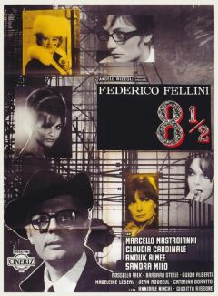
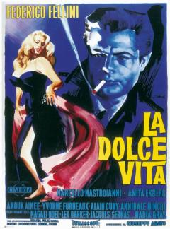
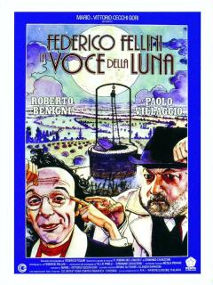

8 e mezzo 1963
Guido è un regista, quarantenne, un po' stanco. Tutto ciò che lo riguarda è stanco: il rapporto con la moglie, col suo produttore, con gli amici, persino con l'amante. Guido cerca in quella località di coniugare i propri problemi fisici (stanchezza cardiaca) con quelli della produzione del film, ancora in fase di preparazione.
La quiete che vorrebbe è continuamente minata dalla presenza delle maestranze del film (produttore, tecnici, attori) che soggiornano nel suo stesso albergo e che vedono in lui l'unico appoggio sicuro. Ma il suo spirito creativo si è inaridito e non riesce a dare una direzione chiara al suo progetto cinematografico. Oltretutto, ai suoi problemi professionali si aggiungono grattacapi sentimentali.
La dolce vita 1960
Marcello Rubini (Marcello Mastroianni) è un giornalista romano che si occupa di servizi scandalistici e per questo motivo frequenta assiduamente via Veneto ed i suoi locali in cerca di scoop o foto sensazionali di personaggi del mondo dello spettacolo, di ricchi borghesi o di nobili in cerca di eccessi.
La voce della luna 1990
Nella "bassa padana", il mite Ivo Salvini, la cui mente è sempre in bilico tra fantasie e realtà, crede di sentire delle voci, provenienti dai pozzi della campagna illuminata dalla luna, che lo esortano ad andare lontano per inseguire il suo ideale di donna che assomiglia alla luna tanto amata.
8 e mezzo

La dolce vita

La voce della luna
